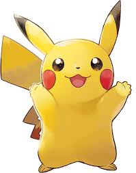
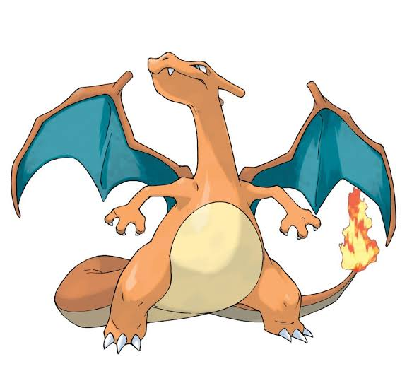

Pikachu #025
EléctricoLa mascota oficial. Almacena electricidad en sus mejillas.
Generaciones, Pokémon destacados y datos
| Gen | Región | Año | Pokémon nuevos |
|---|---|---|---|
| I | Kanto | 1996 | 151 |
| II | Johto | 1999 | 100 |
| III | Hoenn | 2002 | 135 |
| IV | Sinnoh | 2006 | 107 |
| V | Teselia | 2010 | 156 |
| VI | Kalos | 2013 | 72 |
| VII | Alola | 2016 | 88 |
| VIII | Galar / Hisui | 2019 | 96 |
| IX | Paldea | 2022 | 120 |

La mascota oficial. Almacena electricidad en sus mejillas.
Creado por ingeniería genética a partir de Mew.

Vuela alto; su fuego arde más con cada combate.
Su canto hace dormir a quien lo escucha.
Come cientos de kilos al día y duerme sin parar.
Percibe y controla el aura de los seres vivos.